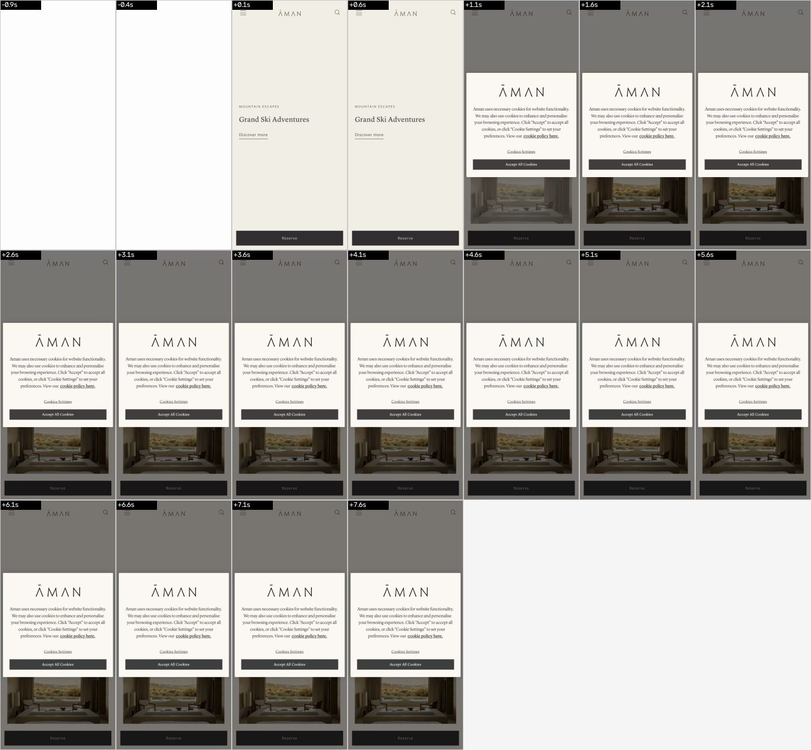
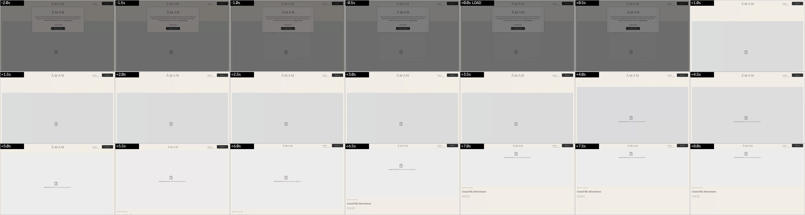
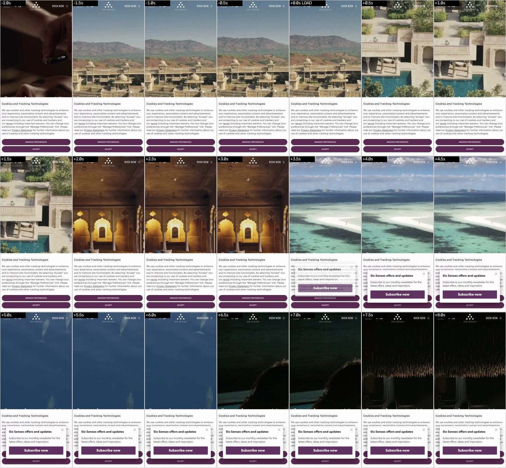
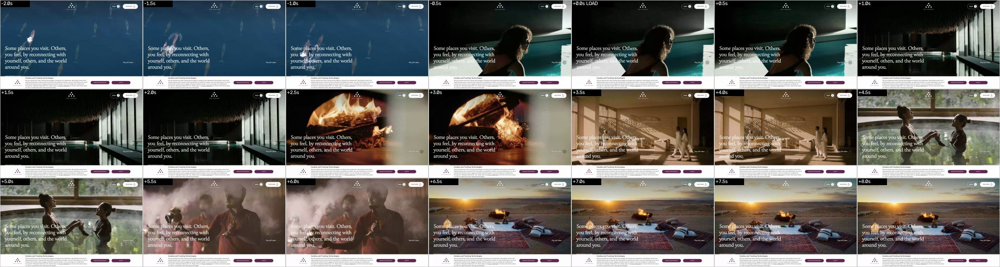
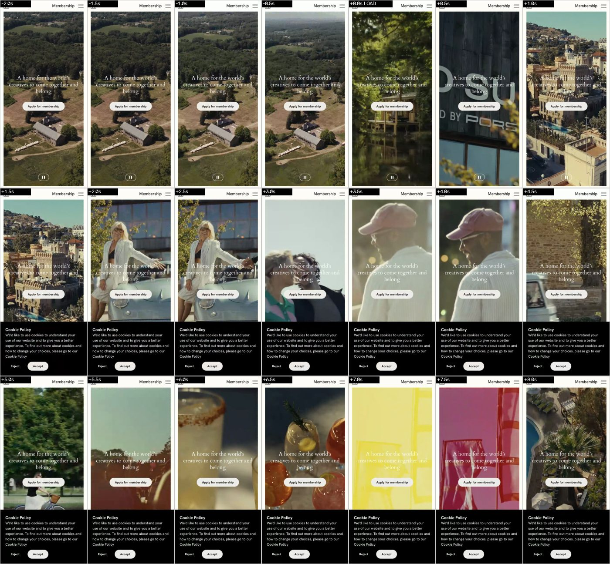
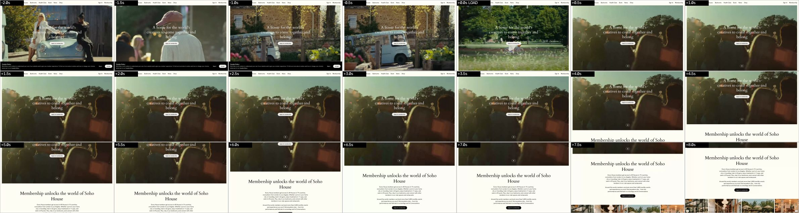
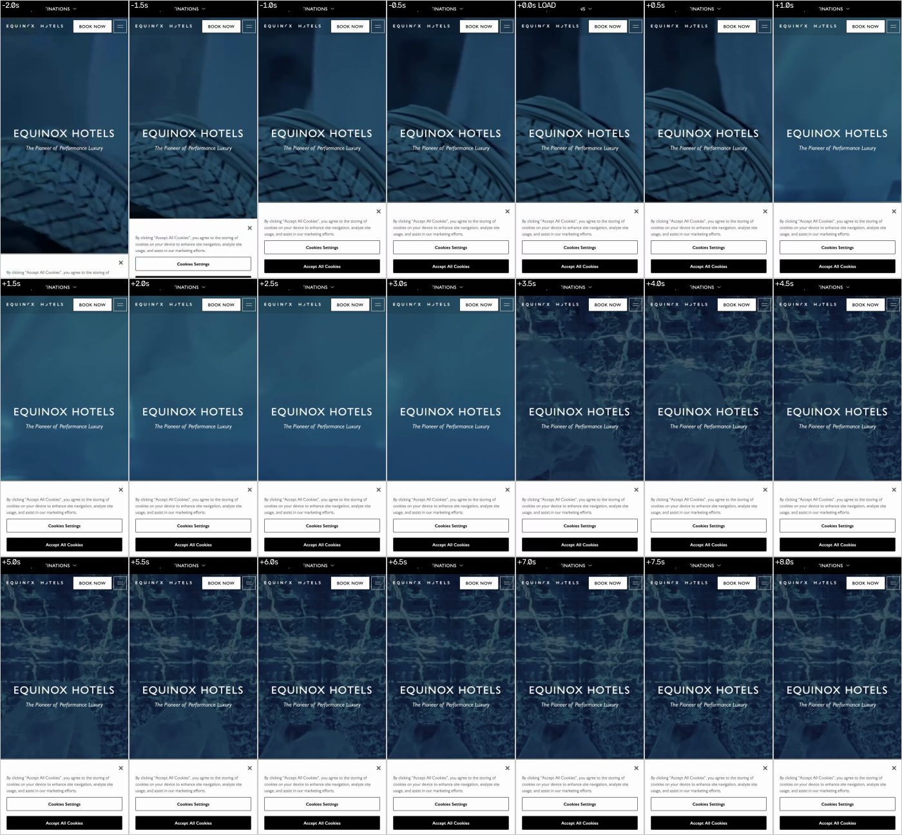
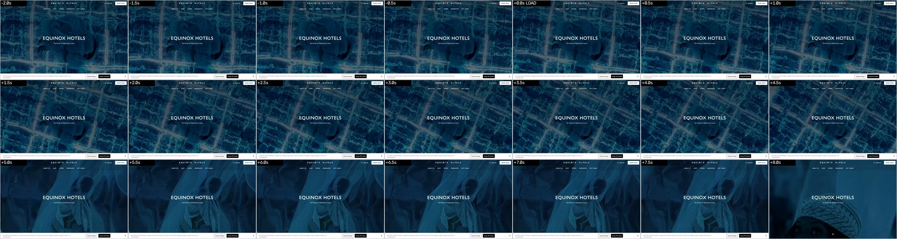
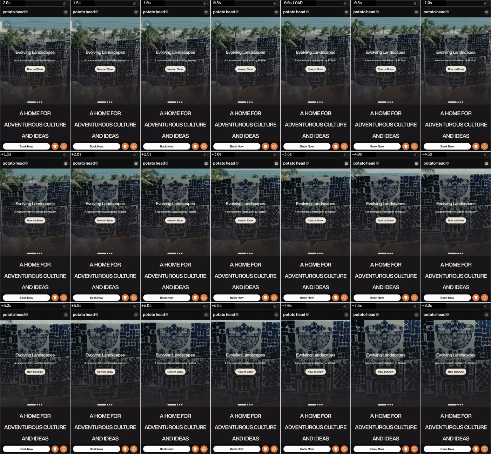
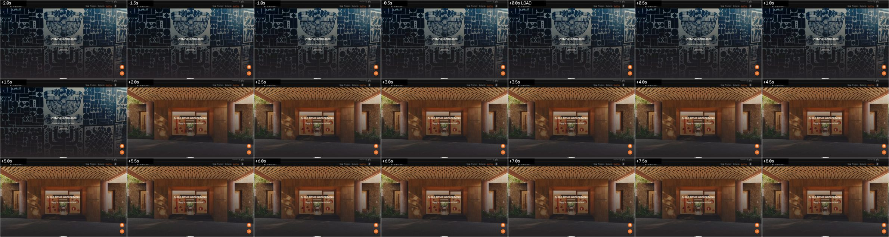

Hero benchmark H3: hospitality, design hotels and Bali lifestyle
Batch H3: premium hospitality, design-hotel and Bali lifestyle homepages. 15 sites captured on 2026-10-01 (12 requested sites plus 3 extras), mobile in WebKit first, desktop in Chrome second. Scores are a provisional screen; the design lead judges the filmstrips.
- Vimeo is blocked on the capture network: vimeo.com and player.vimeo.com resolve to an Indonesian ISP block page (lamanlabuh.aduankonten.id). Aman's hero film is a Vimeo embed and never played. It was not bypassed. Bali visitors on the same ISP would see the same gap; hero film hosted on Vimeo is a risk for Elite Fit.
- Aesop desktop is blocked: two attempts failed (Chrome closed under load, then a hang past the 10-minute watchdog); Aesop mobile is complete. First desktop attempts that failed and were recaptured (saved files are the recaptures): Six Senses, Bvlgari and Desa Potato Head (403 for the headless user agent), Equinox Hotels, COMO and Nihi (no load event within 45 s while the machine was overloaded), Fivelements (network outage; Six Senses mobile was also rerun to close consent dialogs). Bisma Eight: bismaeight.com without the hyphen is a parked domain, the real site is bisma-eight.com; editionhotels.com has no Bali page (404), so Bisma Eight stands in for Bali Edition.
- Method: Playwright 1.63. Mobile = WebKit iPhone-14 class 390x844 @2x. Desktop = Google Chrome 154 headless 1440x900 (not bundled Chromium, which cannot play H.264) with a normal Chrome user agent. Filmstrips are frames of the recorded session every 0.5 s from 2 s before to 8 s after the load event (LOAD), or after DOMContentLoaded where the load event never fired. hero-mobile.webm is the whole mobile session (load, 8 s still, consent step, three scrolls).
- Mobile scroll is a JS eased scrollTo of one viewport per step because Playwright WebKit has no wheel or touch-drag API; desktop uses the mouse wheel. Pinned or scroll-scrubbed effects that need real touch input could therefore be missed on mobile; none were visible in the four screenshots per site.
- Consent banners were rejected or minimised (Reject, Deny, Decline, Manage then Decline or Confirm); Accept was clicked only where it was the single option (Nihi). Newsletter, promo and chat pop-ups were left alone, except the Six Senses Settings Submitted dialog, which was closed with its Close button. Nothing was subscribed, submitted or bought.
- Load times, LCP and media weight were measured while other agents loaded the same machine (load average up to 340) on a Bali ISP, so treat them as indicative. Media weight = response body sizes of images, media and fonts seen before load+8 s, best effort.
Archetypes (15 sites): A video + headline 9 (Six Senses, Soho House, Equinox Hotels, Desa Potato Head, Nihi, Ace Hotel, Aesop, Ulaman, Fivelements); B photo + headline 3 (COMO, Bisma Eight, Kamalaya); I editorial collage 1 (The Slow); J other 2 (Aman, Bvlgari). So 60% of the batch is the mass archetype and 80% if photo heroes count. C, D, E, F, G and H: none.
Tech: no hero uses WebGL scenes, pinned scroll sequences, cursor or gyro reaction or CSS scroll-timeline. GSAP + ScrollTrigger on Nihi, GSAP on Kamalaya, Lenis on Fivelements; WebGL contexts requested on Bvlgari, Six Senses, Equinox, Nihi and Fivelements (purpose unverified). The distinction comes from art direction, not from technology.
5 most distinctive: (1) The Slow: no video, framed photo tiles on olive rules, a hand-taped palm mark and a pinned BOOK NOW text bar; 4.7 MB; its concrete-and-timber photography is the Elite Fit room.
(2) Desa Potato Head: four-slide video slider, a live-radio pill and a pinned bottom bar with Book Now plus WhatsApp and shop circles; but 77 MB of video in 8 s on mobile.
(3) Bvlgari: no button at all; a spaced-caps destination list is the navigation, laid over fashion film and kinetic title cards (49 MB).
(4) Nihi Sumba: wildlife film (horses on the beach, whales), serif Edge of Wildness, a WhatsApp bubble from the first frame, then split destination cards.
(5) Fivelements: slow cross-dissolves of human moments, a small bottom-left serif headline, and a header that turns from transparent to cream when the film ends. Runners-up: Bisma Eight (concrete, timber and mauve palette, spoiled by pop-ups) and Ulaman (priced package in the first 4 s).
Steal for Elite Fit (Bali, pool, sauna, café, concrete and timber): a Slow-style tile hero of real room photos (concrete wall, timber slats, pool light, sauna, café) with thin frame rules and one hand-made mark.
Steal: a pinned bottom action bar on mobile with Day pass, Memberships and WhatsApp circles (Potato Head, Nihi); WhatsApp reachable from the first frame.
Steal: navigation as hero (Bvlgari): four or five large text lines (Day pass, Classes today, Pool and sauna, Café, Membership) over a still or a 4-second loop, no buttons, with today's first classes as one live line.
Steal: a visible price in the first screen as an inline card, not a modal (Ulaman does it as a modal: IDR 95M package at 3.5 s); a header that is transparent over the hero and solid after it (Fivelements); slow dissolves and a one-colour grade (Equinox duotone) instead of fast cuts.
Avoid: centred headline plus two buttons over a generic loop; heroes under 200 px tall on a phone (COMO, Ace, Kamalaya); consent, newsletter, promo or chat pop-ups over the first screen (Six Senses, Bisma Eight, Ulaman, Kamalaya); videos of 17 to 77 MB (Potato Head, Bvlgari, Six Senses, Soho House); consent-gated or Vimeo-hosted film that Bali visitors may never see (Kamalaya, Aman).
| # | Site | Arch. | Score | Headline | Primary CTA | Memorable |
|---|---|---|---|---|---|---|
| 1 | Aman | J | 3 | Grand Ski Adventures (eyebrow: Mountain Escapes). No H1 in the DOM. | Discover more (text link); sticky bar: Reserve | Restraint: cream page, thin serif, one pinned dark Reserve bar. Nothing animates in 8 s on this network. |
| 2 | Six Senses | A | 3 | Some places you visit. Others, you feel, by reconnecting with yourself, others, and the world around you. | VIEW PROPERTIES ON MAP (text link); header: BOOK NOW | Slow montage of rooms, ocean and fire under a very large serif statement that reads like a manifesto. |
| 3 | Soho House | A | 2 | A home for the world's creatives to come together and belong | Apply for membership | Very fast film cuts (about 1.5 to 2 s: aerial estate, vintage car, faces, cocktails, colour fields) in a consi |
| 4 | Equinox Hotels | A | 3 | EQUINOX HOTELS / The Pioneer of Performance Luxury | BOOK NOW (header) | Deep teal duotone grade over macro textures (rope, fabric, water), which makes the brand colour unmistakable. |
| 5 | Desa Potato Head (Bali) | A | 4 | Evolving Landscapes (slide) and A HOME FOR ADVENTUROUS CULTURE AND IDEAS (fixed statement) | Now on Show (slide button); sticky bar: Book Now | A pinned bottom bar with Book Now plus WhatsApp and a shop shortcut, under a live-looking art-and-music slider |
| 6 | Bvlgari Hotels & Resorts | J | 4 | BVLGARI HOTELS & RESORTS (H1 in DOM: Luxury Hotels and Resorts) | No button; destination names are the links (BALI among them) | The navigation is the hero: a type-only city index over fast fashion-film cuts and kinetic title cards. |
| 7 | COMO Hotels and Resorts | B | 2 | WELCOME TO COMO HOTELS AND RESORTS (H1 in DOM); visible slide: See the world in a new light | BOOK (header); slide button: DISCOVER THE FESTIVE SEASON WITH US | Nothing, template. The thin wordmark is elegant, but the first phone screen is mostly a paragraph. |
| 8 | The Slow (Canggu, Bali) | I | 5 | No visible headline on a phone; H1 in the DOM: THE SLOW / GET HERE FAST, TAKE IT SLOW | BOOK NOW (pinned bar) | It looks like a printed magazine: concrete, timber and palms in tiles, olive rules, a handmade palm mark. Conc |
| 9 | Nihi Sumba | A | 4 | Edge of Wildness (tagline: REMOTE BY NATURE. REFINED BY DESIGN.) | RESERVE (header); EXPLORE BELOW (chevron) | Wild subject matter in the film (horses on a beach, whales, surf, aerial villas) and a WhatsApp bubble from th |
| 10 | Ace Hotel | A | 3 | WELCOME TO ACE HOTEL | BOOK NOW (orange header tab) | Heavy condensed poster type and an orange BOOK NOW tab; the brand sounds like itself. |
| 11 | Aesop | A | 3 | The Fragrant Fables (eyebrow: Introducing) | Explore the story | Close, tactile film (a hand on bottle caps, a spray) and a calm library scene; type stays left-aligned and sma |
| 12 | Bisma Eight (Ubud, Bali design hotel) | B | 3 | A BOUTIQUE HOTEL IN UBUD, BALI (H1, sits below the photo on a phone) | BOOK NOW (promo bar); CHECK ROOM AVAILABILITY (below the fold) | Raw concrete, warm timber and terracotta bedding in the photos on a dusty-mauve page: the closest look to the |
| 13 | Kamalaya (Koh Samui, wellness) | B | 2 | WELCOME TO KAMALAYA / THE REALM OF THE LOTUS | BOOK / BOOK NOW (header tab) | Nothing, template: a centred heading above a text block. |
| 14 | Ulaman (Tabanan, Bali eco resort) | A | 3 | No visible headline; H1 in the DOM starts: Nestled among the rice fields and coconut trees of Tabanan, Ulaman is ... | Book (header outline button); modal: BOOK NOW | A priced, all-inclusive package appears on top of the film within four seconds, with a chat assistant, so a vi |
| 15 | Fivelements (Ubud, Bali wellness) | A | 3 | ALIGN for LIFE (sub: A global approach to integrative wellbeing, designed for lifelong vitality.) | Plan Your Retreat (header pill); Explore More (text link) | Intimate, human film language (hands, a yoga pose, rice field, leaves) with soft dissolves, and the header tha |
1. Aman
Archetype J: OtherStands out 3/5

- Headline
- Grand Ski Adventures (eyebrow: Mountain Escapes). No H1 in the DOM.
- Primary CTA (exact)
- Discover more (text link); sticky bar: Reserve
- Price / pass / schedule
- No price, pass or schedule. A full-width Reserve bar stays pinned at the bottom on mobile.
- Mobile header
- Sticky cream header: burger left, AMAN wordmark centred, search right. Stays visible on scroll (measured top 0 at scroll 1, 2, 3).
- Phone, first 844 px
- cream header (burger, wordmark, search) | empty cream block where the Vimeo film should sit (blocked here) | eyebrow MOUNTAIN ESCAPES | serif title Grand Ski Adventures | text link Discover more | top of a desert-suite photo card | dark full-width Reserve bar pinned at the bottom
- What moves (8 s)
- Nothing visible in the first 8 s except the consent dialog; the Vimeo player failed to connect.
- Scroll, mobile
- Ordinary document scroll (eased JS scroll used, WebKit has no wheel API). Sections are stacked cards and a horizontal card carousel; no pin, parallax or scrubbing seen in the four screenshots. Header and Reserve bar stay.
- Scroll, desktop
- Wheel scroll: sticky header with Menu, search, language and a dark Reserve button; framed film panel scrolls away, then card carousels. No pinning or parallax seen.
- Memorable
- Restraint: cream page, thin serif, one pinned dark Reserve bar. Nothing animates in 8 s on this network.
- Why this score
- Calm and unmistakably luxury, but the visible mechanics are a plain stack of cards; the film could not be judged.
- Archetype note
- Framed film panel on a cream page plus a text-and-card carousel. On this network the Vimeo film never loaded (player.vimeo.com is DNS-blocked), so the intended motion is unverified.
- Caveats
- Hero film hosted on Vimeo; vimeo.com and player.vimeo.com resolve to an Indonesian ISP block page from this network, so the film is not rendered (desktop shows a grey broken-media box). Real Bali visitors on the same ISP see the same. | Consent handled through Cookies Settings, then Confirm My Choices (least tracking).
Tech evidence
Desktop: libs: Slick, jQuery; video elements: 0; video iframes: https://www.aman.com/media/oembed?url=https%3A//vimeo.com/12; canvas: 0, WebGL context requested: no; CSS: no animation-timeline / scroll-timeline / view-timeline / view-transition / scroll-snap found in fetched CSS; sticky: header.main-header.is-b-visible(88px); media first 8 s: video 0.00 MB, images 0.29 MB, fonts 0.37 MB (0 sizes unknown); LCP: unknown; motion first 8 s: mean frame diff 0.762 (first-vs-last 124.32)
2. Six Senses
Archetype A: Full-bleed looping video, centred headline + button(s) (the mass)Stands out 3/5

- Headline
- Some places you visit. Others, you feel, by reconnecting with yourself, others, and the world around you.
- Primary CTA (exact)
- VIEW PROPERTIES ON MAP (text link); header: BOOK NOW
- Price / pass / schedule
- No price. Desktop hero carries a search bar (destination or hotel, check-in, check-out, guests, special codes, SEARCH). Mobile shows BOOK NOW in the header only.
- Mobile header
- Fixed header over the video: burger, EN language selector, SIX SENSES wordmark, BOOK NOW. Stays on scroll and turns translucent cream.
- Phone, first 844 px
- header (burger, EN selector, SIX SENSES wordmark, BOOK NOW) over full-bleed video | large serif statement in the lower half | newsletter pop-up (Subscribe now) over the lower third from about 2 s | text link VIEW PROPERTIES ON MAP | play control bottom-right
- What moves (8 s)
- Video cuts every 1.5 to 3 s (arched palace, lagoon, whale water, forest, fire sparks, sand shadows); the statement fades in line by line.
- Scroll, mobile
- Plain scroll into a featured-properties list; header becomes translucent cream. No pinning seen.
- Scroll, desktop
- Plain scroll; header persists; newsletter modal stays bottom-right.
- Memorable
- Slow montage of rooms, ocean and fire under a very large serif statement that reads like a manifesto.
- Why this score
- Strong type, but it is still video plus overlay text; the booking bar and modals add template noise.
- Archetype note
- Full-bleed video montage with a large serif statement; no centred button, a text link instead. Desktop adds a booking bar in the hero.
- Caveats
- A newsletter pop-up (Six Senses offers and updates, Subscribe now) appears about 2 s after load and stays over the lower hero in all screenshots; it was not interacted with. | Consent (TrustArc): Manage Preferences, then Decline all cookies and trackers; the Settings Submitted dialog was closed with its Close button.
Tech evidence
Desktop: libs: jQuery; video elements: 1 (hero: 6j7764ckk9t6vfkf8/Homepage_Video_web-optimized.mp4 21.12s muted=True loop=True playsinline=True); canvas: 0, WebGL context requested: yes; CSS: no animation-timeline / scroll-timeline / view-timeline / view-transition / scroll-snap found in fetched CSS; sticky: none >40px; media first 8 s: video 10.01 MB, images 0.94 MB, fonts 0.25 MB (0 sizes unknown); LCP: 9216 ms h1.h2; motion first 8 s: mean frame diff 3.252 (first-vs-last 82.95)
3. Soho House
Archetype A: Full-bleed looping video, centred headline + button(s) (the mass)Stands out 2/5

- Headline
- A home for the world's creatives to come together and belong
- Primary CTA (exact)
- Apply for membership
- Price / pass / schedule
- No price or schedule; the only offer is a membership application.
- Mobile header
- Static transparent header over the video: grid icon left, Membership link, burger right. It scrolls away with the page (measured top -844 at scroll 1).
- Phone, first 844 px
- header strip (grid icon, Membership, burger) | full-bleed video | centred serif headline | white pill Apply for membership | pause button at the bottom
- What moves (8 s)
- Video montage with a cut every 1.5 to 2 s; headline and button stay fixed on top.
- Scroll, mobile
- Hero scrolls away into a cream Membership statement and a house carousel. No pin or parallax.
- Scroll, desktop
- Same: video hero, then centred serif intro and card carousel.
- Memorable
- Very fast film cuts (about 1.5 to 2 s: aerial estate, vintage car, faces, cocktails, colour fields) in a consistent warm grade.
- Why this score
- This is the mass archetype; the edit is good, the layout is not.
- Archetype note
- Textbook A: full-bleed muted looping montage, centred serif headline, one pill button.
- Caveats
- Mobile hero video is about 17.7 MB in the first 8 s (30 s mp4, measured). | Desktop: one hero video file requested from download-video-ak.vimeocdn.com closed the connection (ERR_CONNECTION_CLOSED); the rest of the film played.
Tech evidence
Desktop: libs: __NUXT__, Splide; video elements: 1 (hero: =%2Fv3-1%2Fplayback%2F658c0dd8-e9db-4568-ba41-2527 30.21s muted=True loop=True playsinline=True); canvas: 0, WebGL context requested: no; CSS: no animation-timeline / scroll-timeline / view-timeline / view-transition / scroll-snap found in fetched CSS; sticky: none >40px; media first 8 s: video 32.75 MB, images 0.97 MB, fonts 0.11 MB (0 sizes unknown); LCP: 20916 ms img; motion first 8 s: mean frame diff 2.572 (first-vs-last 152.62)
4. Equinox Hotels
Archetype A: Full-bleed looping video, centred headline + button(s) (the mass)Stands out 3/5

- Headline
- EQUINOX HOTELS / The Pioneer of Performance Luxury
- Primary CTA (exact)
- BOOK NOW (header)
- Price / pass / schedule
- No price. BOOK NOW in the header.
- Mobile header
- Black GLOBAL and DESTINATIONS strip on top, then a fixed row with logo, white BOOK NOW box and burger. Stays on scroll.
- Phone, first 844 px
- black strip GLOBAL | DESTINATIONS | header row (logo, BOOK NOW, burger) | full-bleed teal-blue duotone video | centred EQUINOX HOTELS and italic tagline | mute icon bottom-left
- What moves (8 s)
- Duotone loop of textures (19.7 s mp4) changing slowly; the headline stays still.
- Scroll, mobile
- Hero scrolls into text and a destination carousel, then a black Our Brand block with four large text links. No pin.
- Scroll, desktop
- Black GLOBAL | DESTINATIONS strip, centred logo, SIGN IN and BOOK NOW, a second nav row (About us, Sleep, Offers, Residences, Gift cards); the film hero scrolls away into a destinations text and image block, then a black Our Brand panel beside a large portrait photo.
- Memorable
- Deep teal duotone grade over macro textures (rope, fabric, water), which makes the brand colour unmistakable.
- Why this score
- Same layout as the mass, saved by the single-colour grade and a short, confident headline.
- Archetype note
- Full-bleed looping video with centred wordmark headline; the blue duotone colour grade is the only twist.
- Caveats
- Consent banner closed with its X (no accept clicked).
Tech evidence
Desktop: libs: Swiper, WordPress; video elements: 1 (hero: hotels.com/wp-content/uploads/2025/03/homepage.mp4 19.72s muted=True loop=True playsinline=True); canvas: 0, WebGL context requested: yes; CSS: scroll-snap; sticky: none >40px; media first 8 s: video 1.61 MB, images 0.75 MB, fonts 0.59 MB (2 sizes unknown); LCP: 4520 ms h1.equ-hero__heading; motion first 8 s: mean frame diff 2.151 (first-vs-last 37.39)
5. Desa Potato Head (Bali)
Archetype A: Full-bleed looping video, centred headline + button(s) (the mass)Stands out 4/5

- Headline
- Evolving Landscapes (slide) and A HOME FOR ADVENTUROUS CULTURE AND IDEAS (fixed statement)
- Primary CTA (exact)
- Now on Show (slide button); sticky bar: Book Now
- Price / pass / schedule
- No price in the hero. Book Now pinned at the bottom; programme cards with dates and Book Event Pass appear one screen below.
- Mobile header
- Sticky dark header: wordmark left, burger right, with a Live Now radio pill above it. Always visible on scroll.
- Phone, first 844 px
- Live Now pill | header (logo, burger) | video slider with title, subtitle, pill Now on Show, 4 dots, sound icon | black band with the uppercase statement | pinned bottom bar: white Book Now pill, orange shop icon, orange WhatsApp icon
- What moves (8 s)
- Slide video of a large patterned installation moves and zooms; slides auto-advance; the pill and bar stay.
- Scroll, mobile
- Dark sections slide in: Create cards, Cultural Programs with dated event cards, then a light Rooms carousel. Bottom bar stays pinned all the way.
- Scroll, desktop
- Sticky top header with links Shop, Programs, Contact Us, Book Now; round orange shop and WhatsApp buttons float bottom-right.
- Memorable
- A pinned bottom bar with Book Now plus WhatsApp and a shop shortcut, under a live-looking art-and-music slider.
- Why this score
- Still a video hero, but the pinned action bar, the radio pill and the programme feel make it a living place, not a brochure.
- Archetype note
- Video slider (four slides) with a poster-type statement and a pinned action bar. potatohead.co redirects to seminyak.potatohead.co.
- Caveats
- Heaviest hero in the batch: about 77 MB of video and 3.7 MB images in the first 8 s on mobile (measured). | Desktop first attempt on www.potatohead.co returned 403; second attempt loaded via the seminyak subdomain.
Tech evidence
Desktop: libs: __NEXT_DATA__, Swiper, React; video elements: 2 (hero: dn.potatohead.co/Evolving_landscape_82aa5a52a6.mp4 15s muted=True loop=False playsinline=True); canvas: 0, WebGL context requested: no; CSS: scroll-snap; sticky: header.Header.sticky(96px); media first 8 s: video 32.45 MB, images 1.63 MB, fonts 0.00 MB (11 sizes unknown); LCP: 23800 ms video.w-full; motion first 8 s: mean frame diff 0.235 (first-vs-last 30.68)
6. Bvlgari Hotels & Resorts
Archetype J: OtherStands out 4/5


- Headline
- BVLGARI HOTELS & RESORTS (H1 in DOM: Luxury Hotels and Resorts)
- Primary CTA (exact)
- No button; destination names are the links (BALI among them)
- Price / pass / schedule
- None.
- Mobile header
- No header. Only an ENGLISH language selector at the top-left.
- Phone, first 844 px
- language selector | BVLGARI HOTELS & RESORTS wordmark | centred destination list in spaced caps (Rome, Milan, Paris, London, Dubai, Bali, Tokyo, Ranfushi 2027, Bodrum 2028, Miami Beach 2029, Beijing, Shanghai, Tokyo Ginza Bar-Cafe, Abu Dhabi) over full-bleed film
- What moves (8 s)
- 75 s trailer: street scene, black kinetic title cards (SPECIAL GUEST), a driver and guests at a car door, a facade; the list stays still on top.
- Scroll, mobile
- Hero scrolls into OUR COLLECTION with a photo and accordions, then the footer. Very short page (about 2,500 px).
- Scroll, desktop
- Full-bleed film with the wordmark and the destination list in one small-caps row, language selector top-right, pause and mute controls bottom corners, scroll chevron; then OUR COLLECTION with tabs and a dark footer. No pin.
- Memorable
- The navigation is the hero: a type-only city index over fast fashion-film cuts and kinetic title cards.
- Why this score
- Almost no UI, which is rare; the list-over-film idea is easy to borrow.
- Archetype note
- Pre-home gate: wordmark plus a list of destinations as the only navigation, over a looping fashion-film trailer. No button.
- Caveats
- Hero video about 49 MB (mobile) and 39 MB (desktop) in the first 8 s (measured). | Desktop: first attempt got a 403 with the headless user agent; the recapture with a normal Chrome user agent loaded in 4.3 s.
Tech evidence
Desktop: libs: Slick, jQuery; video elements: 1 (hero: -af738b543289/BULGARI_TRAILER_16-9_subENG%20LQ.mp4 75.16s muted=True loop=True playsinline=True); canvas: 0, WebGL context requested: yes; CSS: no animation-timeline / scroll-timeline / view-timeline / view-transition / scroll-snap found in fetched CSS; sticky: none >40px; media first 8 s: video 38.81 MB, images 0.18 MB, fonts 0.07 MB (1 sizes unknown); LCP: 4208 ms img.img-responsive; motion first 8 s: mean frame diff 5.159 (first-vs-last 56.15)
7. COMO Hotels and Resorts
Archetype B: Full-bleed photo with headlineStands out 2/5


- Headline
- WELCOME TO COMO HOTELS AND RESORTS (H1 in DOM); visible slide: See the world in a new light
- Primary CTA (exact)
- BOOK (header); slide button: DISCOVER THE FESTIVE SEASON WITH US
- Price / pass / schedule
- None.
- Mobile header
- Fixed translucent white header with blur: burger left, COMO wordmark centre, outlined BOOK right. Turns solid white after scroll.
- Phone, first 844 px
- header (burger, COMO, BOOK) | short slider about 250 px with arrows and a translucent text box | scroll chevron | a paragraph of intro text filling the rest of the screen
- What moves (8 s)
- Slider auto-advances slowly; videos are present but preload none, so little motion in 8 s.
- Scroll, mobile
- Intro, about block, an I'M SEARCHING FOR [Beach holidays] picker, destination cards. No pin.
- Scroll, desktop
- Fixed header with COMO HOME and ALL DESTINATIONS, centred wordmark, ENGLISH and a white BOOK button; slider with arrows and thin type SEE THE WORLD IN A NEW LIGHT; then an About block and the picker I'M SEARCHING FOR [Beach holidays].
- Memorable
- Nothing, template. The thin wordmark is elegant, but the first phone screen is mostly a paragraph.
- Why this score
- A short slider with arrows and a text block is the default hotel pattern; the phone hero barely exists.
- Archetype note
- Photo and video slider that is only about 250 px tall on a phone; text-led below it.
- Caveats
- Consent banner rejected with Reject Cookies.
Tech evidence
Desktop: libs: Swiper, jQuery; video elements: 12; canvas: 0, WebGL context requested: no; CSS: no animation-timeline / scroll-timeline / view-timeline / view-transition / scroll-snap found in fetched CSS; sticky: none >40px; media first 8 s: video 33.90 MB, images 5.17 MB, fonts 0.07 MB (2 sizes unknown); LCP: unknown; motion first 8 s: mean frame diff 0.058 (first-vs-last 1.25)
8. The Slow (Canggu, Bali)
Archetype I: Editorial collage / gridStands out 5/5


- Headline
- No visible headline on a phone; H1 in the DOM: THE SLOW / GET HERE FAST, TAKE IT SLOW
- Primary CTA (exact)
- BOOK NOW (pinned bar)
- Price / pass / schedule
- None. Pinned BOOK NOW text bar.
- Mobile header
- Taupe bar with bold THE SLOW wordmark left and burger right; fixed on scroll.
- Phone, first 844 px
- header (THE SLOW, burger) | tile 1: dark sea photo with the taped palm glyph | tile 2: timber-slat facade with shutters and palm leaves | olive frame lines | BOOK NOW bar pinned at the bottom
- What moves (8 s)
- Nothing (static images, frame difference 0.09). It starts from a black screen with a faint palm glyph for about a second.
- Scroll, mobile
- Tiles stack: terrace, shadow close-up, brick and curtain, pool suite with black label tags; BOOK NOW stays pinned.
- Scroll, desktop
- Olive page with a left column (THE SLOW, five small links), photo masonry in the middle, BOOK NOW on the right; the page flips to white at SUITES with black label tags on photos.
- Memorable
- It looks like a printed magazine: concrete, timber and palms in tiles, olive rules, a handmade palm mark. Concrete-and-timber is exactly the Elite Fit room.
- Why this score
- The only site here with no video and no centred headline, and the most 'place' per pixel; also the lightest.
- Archetype note
- Editorial collage: framed photo tiles on olive gutters, hand-drawn palm mark, almost no UI. No video.
- Caveats
- Largest contentful paint 7.2 s on mobile under load; static images 4.7 MB.
Tech evidence
Desktop: libs: Swiper, jQuery, WordPress; video elements: 0; canvas: 0, WebGL context requested: no; CSS: scroll-snap; sticky: none >40px; media first 8 s: video 0.00 MB, images 4.15 MB, fonts 1.19 MB (0 sizes unknown); LCP: 32472 ms img.attachment-large; motion first 8 s: mean frame diff 2.757 (first-vs-last 113.68)
9. Nihi Sumba
Archetype A: Full-bleed looping video, centred headline + button(s) (the mass)Stands out 4/5


- Headline
- Edge of Wildness (tagline: REMOTE BY NATURE. REFINED BY DESIGN.)
- Primary CTA (exact)
- RESERVE (header); EXPLORE BELOW (chevron)
- Price / pass / schedule
- None.
- Mobile header
- Fixed header: burger and RESORT dropdown left, leaf logo and NIHI wordmark centre, outlined RESERVE right. Darkens slightly on scroll.
- Phone, first 844 px
- header (burger, RESORT, logo, RESERVE) | full-bleed video | large serif Edge of Wildness | tagline | The Destinations and EXPLORE BELOW chevron | Michelin key badge bottom-left | green WhatsApp bubble bottom-right
- What moves (8 s)
- Video montage with a cut every 1.5 to 2.5 s; a fine chevron nudges; the headline stays.
- Scroll, mobile
- Split destination cards (Sumba, Rote) with circular DISCOVER arrows and a floating Contact us, Getting here, Share bar; WhatsApp bubble stays.
- Scroll, desktop
- Full-bleed aerial film of villas with a large serif headline; RESERVE outline button top-right; below it a split Sumba and Rote panel with a Michelin Key badge, a three-up experiences carousel and a floating Contact us, Getting here, Share bar.
- Memorable
- Wild subject matter in the film (horses on a beach, whales, surf, aerial villas) and a WhatsApp bubble from the first frame.
- Why this score
- Same archetype as the mass, lifted by the film content, the serif voice and the always-on WhatsApp.
- Archetype note
- Video montage with a large serif headline; nature and animals instead of rooms.
- Caveats
- Only an Accept option exists on the consent box, so Accept was clicked as the last resort. | GSAP and ScrollTrigger are loaded on the page; what they drive was not verified.
Tech evidence
Desktop: libs: gsap, ScrollTrigger, Splide, jQuery, WordPress; video elements: 1 (hero: -content/uploads/2026/09/nihi-compilation-0926.mp4 28.37s muted=True loop=True playsinline=True); canvas: 0, WebGL context requested: yes; CSS: scroll-snap; sticky: none >40px; media first 8 s: video 7.93 MB, images 1.61 MB, fonts 0.36 MB (2 sizes unknown); LCP: 10860 ms h1.animate-text; motion first 8 s: mean frame diff 5.298 (first-vs-last 56.9)
10. Ace Hotel
Archetype A: Full-bleed looping video, centred headline + button(s) (the mass)Stands out 3/5


- Headline
- WELCOME TO ACE HOTEL
- Primary CTA (exact)
- BOOK NOW (orange header tab)
- Price / pass / schedule
- Mobile: no. Desktop: a full booking bar in the header (location, check-in, check-out, guests, code) with an orange BOOK NOW.
- Mobile header
- Fixed: burger, boxed ACE HOTEL logo, Locations dropdown, orange BOOK NOW block.
- Phone, first 844 px
- header (burger, logo, Locations, orange BOOK NOW) | about 170 px video strip with WELCOME TO ACE HOTEL in heavy condensed caps and a pause button | brand paragraph | LOCATIONS heading and first photo
- What moves (8 s)
- Video (small strip) with slow cuts; a cookie-style privacy bar sits at the bottom until closed.
- Scroll, mobile
- Locations carousel, Offers, an olive A-LIST email block, Goings On cards; fixed header stays.
- Scroll, desktop
- Two-row header with a booking bar; full-viewport video with WELCOME TO ACE HOTEL; then locations and offers.
- Memorable
- Heavy condensed poster type and an orange BOOK NOW tab; the brand sounds like itself.
- Why this score
- Strong brand voice in type, but the phone hero is a thin strip and the rest is a standard hotel page.
- Archetype note
- Looping video behind poster-style condensed type, but squeezed to a strip on a phone. Type-led in attitude.
- Caveats
- Privacy bar closed with its X.
Tech evidence
Desktop: libs: Flickity, WordPress; video elements: 0; canvas: 0, WebGL context requested: no; CSS: no animation-timeline / scroll-timeline / view-timeline / view-transition / scroll-snap found in fetched CSS; sticky: none >40px; media first 8 s: video 4.65 MB, images 6.71 MB, fonts 0.08 MB (0 sizes unknown); LCP: 20280 ms ul.main-nav-wrapper; motion first 8 s: mean frame diff 0.59 (first-vs-last 71.68)
11. Aesop
Archetype A: Full-bleed looping video, centred headline + button(s) (the mass)Stands out 3/5


Desktop filmstrip: pending
- Headline
- The Fragrant Fables (eyebrow: Introducing)
- Primary CTA (exact)
- Explore the story
- Price / pass / schedule
- No price in the hero; the next screen shows product cards with prices.
- Mobile header
- Aesop wordmark left, search, store pin, bag and burger icons right, over the video. It scrolls away (measured top -844 at scroll 1).
- Phone, first 844 px
- header icons over video | eyebrow Introducing | title The Fragrant Fables | two-line blurb | outlined button Explore the story | play and mute buttons | pale strip with three pagination dashes at the bottom
- What moves (8 s)
- Three video slides auto-advance (bottles, hand, library); about 15 s each; a consent bar sits at the bottom until closed.
- Scroll, mobile
- Curated Sets product carousel, then another full-bleed video block for fragrance, then category tiles. Header does not follow.
- Scroll, desktop
- Not captured: desktop capture failed twice (Chrome closed under load on the first attempt; the second hung past the 10-minute watchdog). Recorded as blocked.
- Memorable
- Close, tactile film (a hand on bottle caps, a spray) and a calm library scene; type stays left-aligned and small.
- Why this score
- A video carousel is common, but the restraint and product focus read as editorial, not generic.
- Archetype note
- Full-bleed video carousel (3 slides, HLS) with left-aligned editorial text and an outlined button; product-led.
- Caveats
- Desktop capture blocked after two failed attempts (browser crash, then hang).
Tech evidence
Desktop: not captured (blocked: capture failed twice)
12. Bisma Eight (Ubud, Bali design hotel)
Archetype B: Full-bleed photo with headlineStands out 3/5


- Headline
- A BOUTIQUE HOTEL IN UBUD, BALI (H1, sits below the photo on a phone)
- Primary CTA (exact)
- BOOK NOW (promo bar); CHECK ROOM AVAILABILITY (below the fold)
- Price / pass / schedule
- No price. A pinned promo bar says STILL TIME FOR SUMMER 15% OFF with BOOK NOW.
- Mobile header
- Announcement bar with a close X on top, then a transparent header: flower mark and BISMA EIGHT wordmark left, burger right. It scrolls away (absolute).
- Phone, first 844 px
- announcement bar (15% off, close X) | header (mark, BISMA EIGHT, burger) | tall photo of a concrete-and-timber suite with side arrows | two pinned pop-ups at the bottom: Tripadvisor 5 out of 5, and STILL TIME FOR SUMMER 15% OFF with BOOK NOW
- What moves (8 s)
- Nothing visible: static photos. A Cookiebot dialog (Allow all, Allow selection, Deny) fills the phone screen for the whole 8 s until Deny was clicked.
- Scroll, mobile
- Brand statement in light caps on mauve, award list (Michelin Key, Tripadvisor, Booking.com), CHECK ROOM AVAILABILITY buttons. The two pop-ups stay pinned.
- Scroll, desktop
- Header with centred logo and a 12-link menu over two full-height photos; then centred award text. Pop-ups stay bottom-left.
- Memorable
- Raw concrete, warm timber and terracotta bedding in the photos on a dusty-mauve page: the closest look to the Elite Fit interior in the batch. Pop-ups spoil it.
- Why this score
- Distinctive colour and honest materials, but static, with two pinned pop-ups over the picture.
- Archetype note
- Full-bleed photography, no video: one tall suite photo with arrows on mobile, a two-up photo spread on desktop, under a dusty-mauve brand colour. (bismaeight.com without the hyphen is a parked domain; the real site is bisma-eight.com.)
- Caveats
- Tripadvisor and 15%-off pop-ups stayed over the hero in all screenshots (not closed). | Consent closed with Deny.
Tech evidence
Desktop: libs: none detected on window/DOM; video elements: 0; canvas: 0, WebGL context requested: no; CSS: scroll-snap; sticky: none >40px; media first 8 s: video 0.00 MB, images 1.70 MB, fonts 0.44 MB (0 sizes unknown); LCP: 10316 ms img; motion first 8 s: mean frame diff 0.674 (first-vs-last 61.21)
13. Kamalaya (Koh Samui, wellness)
Archetype B: Full-bleed photo with headlineStands out 2/5


- Headline
- WELCOME TO KAMALAYA / THE REALM OF THE LOTUS
- Primary CTA (exact)
- BOOK / BOOK NOW (header tab)
- Price / pass / schedule
- None.
- Mobile header
- White bar: maroon BOOK tab left, KAMALAYA KOH SAMUI wordmark centre, burger right. Stays on scroll.
- Phone, first 844 px
- header (BOOK, wordmark, burger) | short photo strip of pavilions and palms | centred maroon caps heading WELCOME TO KAMALAYA | tagline | intro paragraph | video block replaced by a consent placeholder | chat bubble bottom-left
- What moves (8 s)
- Nothing visible in 8 s: static photo.
- Scroll, mobile
- Wellness programmes text and a framed image, accommodation lists, offers. No pin or parallax seen.
- Scroll, desktop
- Centred logo between two nav rows, maroon BOOK NOW, wide photo; the video sits behind a Wistia placeholder with Unblock buttons; award badges.
- Memorable
- Nothing, template: a centred heading above a text block.
- Why this score
- Classic spa-resort template; the phone screen is mostly text, and the film is not shown.
- Archetype note
- Wide photo of thatched pavilions, then a centred heading and a paragraph; the hero video is behind a third-party consent placeholder.
- Caveats
- Wistia/YouTube hero content not unblocked on purpose (unblocking shares data with third parties). | Consent handled via manage and Save with default toggles (toggle state not verified).
Tech evidence
Desktop: libs: gsap, Swiper, Slick, jQuery, WordPress; video elements: 0; video iframes: https://www.youtube.com/embed/5mb6Ho9Gdjs?controls=0&rel=0&p; canvas: 0, WebGL context requested: no; CSS: view-timeline, scroll-snap; sticky: none >40px; media first 8 s: video 0.00 MB, images 12.66 MB, fonts 0.47 MB (0 sizes unknown); LCP: 3728 ms img.attachment-full; motion first 8 s: mean frame diff 1.727 (first-vs-last 18.98)
14. Ulaman (Tabanan, Bali eco resort)
Archetype A: Full-bleed looping video, centred headline + button(s) (the mass)Stands out 3/5


- Headline
- No visible headline; H1 in the DOM starts: Nestled among the rice fields and coconut trees of Tabanan, Ulaman is ...
- Primary CTA (exact)
- Book (header outline button); modal: BOOK NOW
- Price / pass / schedule
- Yes, in a modal: 7 NIGHTS AT ULAMAN, IDR 95M (excl. 21% tax and services), full board, unlimited activities, spa, VIP tours, romantic dinner. Also a notice bar: minimum 2-night stay.
- Mobile header
- Notice bar with X on top, then a fixed header: burger left, gold ULAMAN logo centre, outlined Book right.
- Phone, first 844 px
- notice bar (minimum 2-night stay, X) | header (burger, logo, Book) | aerial film of thatched pods | after 3.5 s: gold-framed modal 7 NIGHTS AT ULAMAN with price and BOOK NOW | chat avatar and bubble (Velma, virtual assistant) bottom-right
- What moves (8 s)
- Aerial film over thatched pods and forest with transport controls; modal fades in at about 3.5 s; chat bubble slides in at about 5.5 s.
- Scroll, mobile
- The modal and chat stay on top; the page behind shows large serif statements and photo cards.
- Scroll, desktop
- Centred logo, Villas Spa Dine Retreats Weddings links, outlined Stay With Us; the package modal covers the centre in all four screenshots.
- Memorable
- A priced, all-inclusive package appears on top of the film within four seconds, with a chat assistant, so a visitor can buy without scrolling.
- Why this score
- The offer-first idea is useful for Elite Fit, but a full modal hides the film and the page.
- Archetype note
- Full-bleed aerial film (YouTube embed) with a gold logo; a priced package modal covers it about 3.5 s after load.
- Caveats
- Modal not closed, so the clean hero was never seen in the screenshots. | Hero film is a YouTube embed (not blocked here).
Tech evidence
Desktop: libs: __NUXT__; video elements: 1; video iframes: https://www.youtube.com/embed/pqkVOxt7Tk4?enablejsapi=1&auto; canvas: 0, WebGL context requested: no; CSS: scroll-snap; sticky: header.sticky(295px), div.p-6.border(70px), div.pt-8.border(80px); media first 8 s: video 0.00 MB, images 4.28 MB, fonts 0.20 MB (0 sizes unknown); LCP: 18480 ms img.w-full; motion first 8 s: mean frame diff 1.014 (first-vs-last 51.54)
15. Fivelements (Ubud, Bali wellness)
Archetype A: Full-bleed looping video, centred headline + button(s) (the mass)Stands out 3/5


- Headline
- ALIGN for LIFE (sub: A global approach to integrative wellbeing, designed for lifelong vitality.)
- Primary CTA (exact)
- Plan Your Retreat (header pill); Explore More (text link)
- Price / pass / schedule
- None.
- Mobile header
- Fixed header: burger left, five-petal logo and FIVELEMENTS wordmark centre, white Plan Your Retreat pill right. Over the film it is transparent; after the hero it turns cream with a maroon logo and pill.
- Phone, first 844 px
- header (burger, flower logo, Plan Your Retreat) | full-bleed film | small serif headline ALIGN for LIFE bottom-left | one-line sub | text link Explore More | reCAPTCHA badge bottom-right
- What moves (8 s)
- Branding film (mp4, muted, loops) dissolves between close shots every 2 to 3 s; the headline stays; the page fades in from white at load.
- Scroll, mobile
- Cream sections: A NEW RHYTHM OF WELLBEING, a rounded-corner Fivelements Ubud card, a destination strip (Ubud, Samui, Montenegro) over a jungle photo, then article carousels. Header switches to cream. Lenis smooth-scroll library present.
- Scroll, desktop
- Same film hero with the nav collapsed to burger, logo, search and Plan Your Retreat; after it the cream sections and the Ubud valley photo.
- Memorable
- Intimate, human film language (hands, a yoga pose, rice field, leaves) with soft dissolves, and the header that changes from transparent to cream as the film ends.
- Why this score
- Same format as the mass, but quiet type, no centred buttons and a human subject make it feel like a wellness brand.
- Archetype note
- Full-bleed branding film with a small bottom-left serif headline and a text link; the film uses slow cross-dissolves of human moments instead of hard cuts.
- Caveats
- First capture during the network outage showed a grey hero; this is the recapture. | Film is about 18.9 MB in the first 8 s on mobile (measured).
Tech evidence
Desktop: libs: Lenis, Swiper, jQuery, WordPress; video elements: 1 (hero: ontent/uploads/2026/06/2026-New-Branding-Video.mp4 51.82s muted=True loop=True playsinline=True); canvas: 0, WebGL context requested: yes; CSS: scroll-snap; sticky: none >40px; media first 8 s: video 18.94 MB, images 3.82 MB, fonts 0.11 MB (0 sizes unknown); LCP: 5336 ms h1.sc-heading; motion first 8 s: mean frame diff 2.968 (first-vs-last 53.05)
- v1.0 — 2026-10-01: first capture, agent h3.